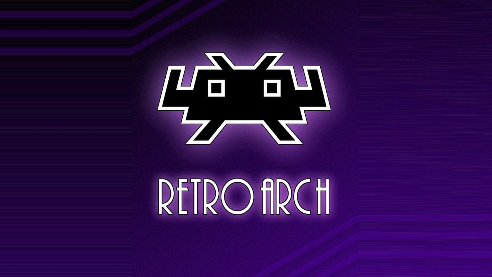
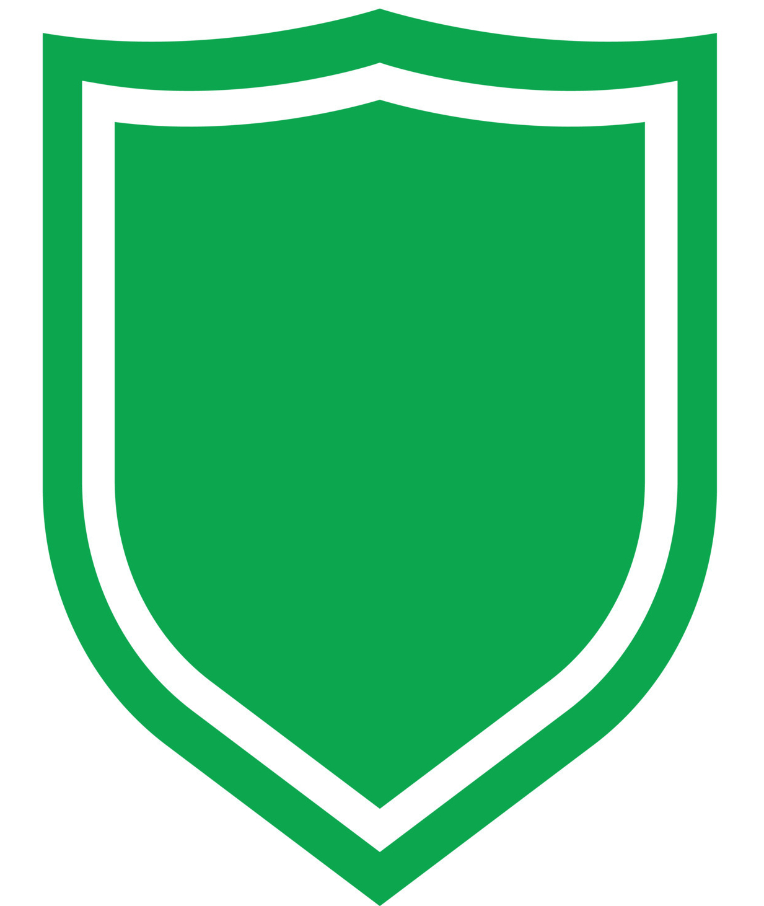

RetroArch

RetroArch is a free and open-source, cross-platform frontend for emulators, game engines, video games, media players and other applications.
It is the reference implementation of the libretro API, designed to be fast, lightweight, portable and without dependencies. It is licensed under the GNU GPLv3.
RetroArch runs programs converted into dynamic libraries called libretro cores, using several user interfaces such as command-line interfaces,
a few graphical user interfaces optimized for gamepads, several input, audio and video drivers, and other sophisticated features such as dynamic rate control,
audio filters, multi-pass shaders, netplay, gameplay rewinding, cheats, etc.
RetroArch has been ported to many platforms. It can run on several PC operating systems, home consoles, handheld consoles, smartphones, smart TV's, single-board computers and web browsers.
Status:
Build From Source only. verified working.
Project Link:
https://github.com/libretro/RetroArch
App Type:
 FOSS - Free Open Source Software
Catagory:
Emulators